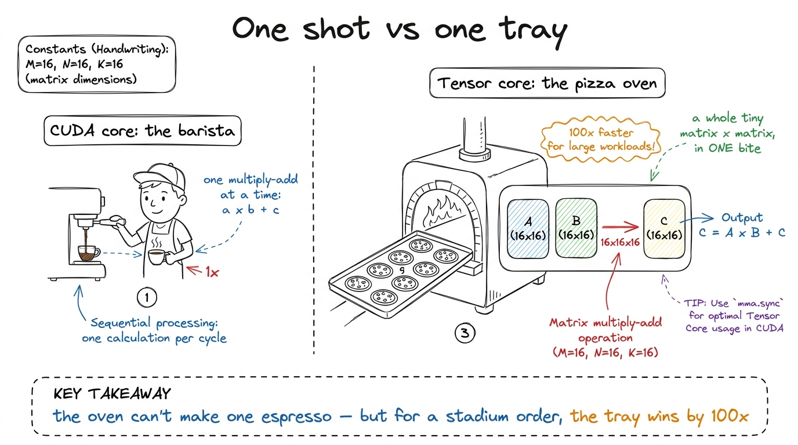
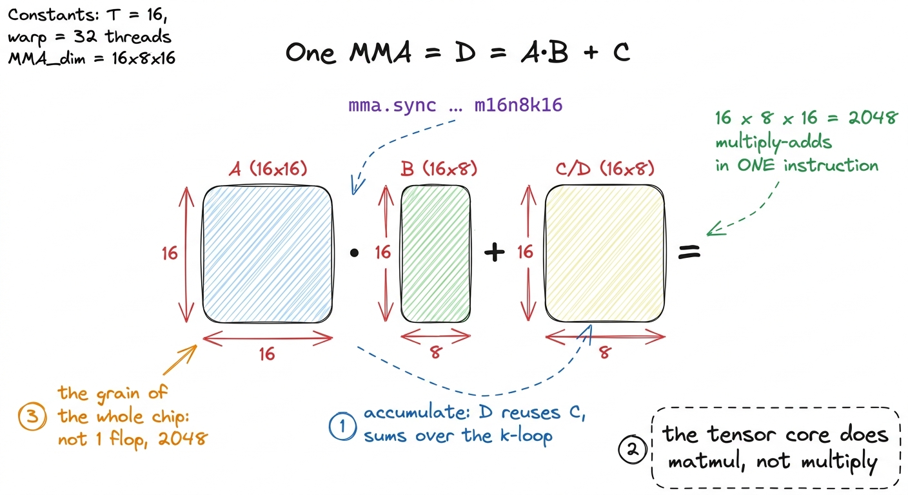
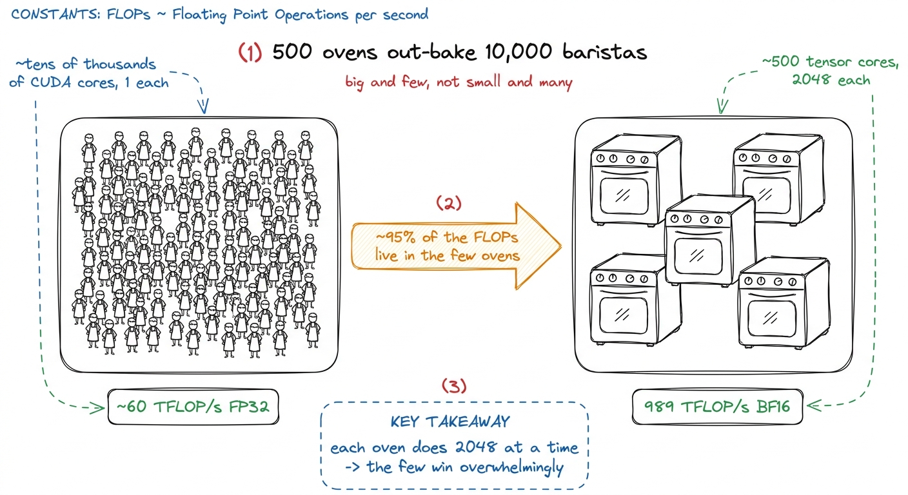
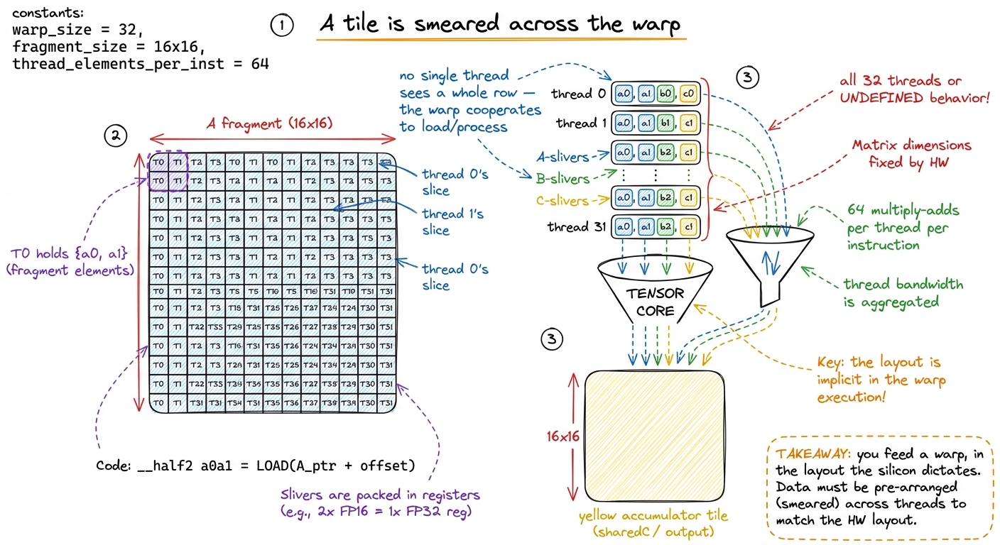
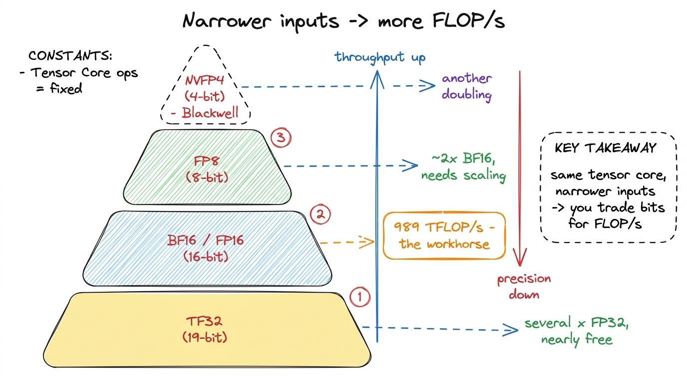
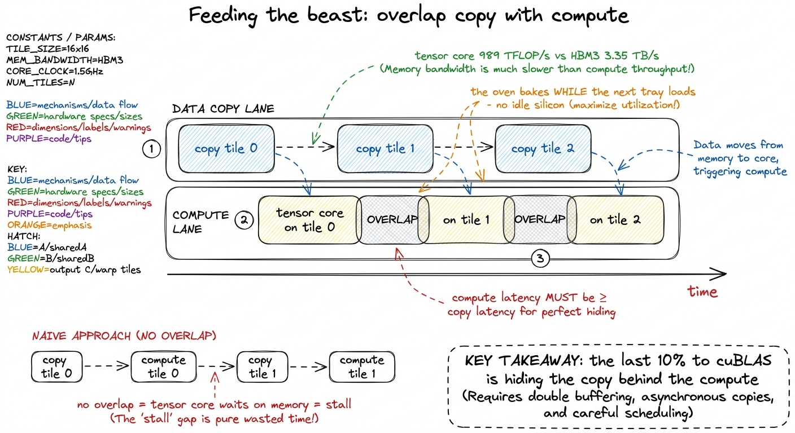

Tensor cores: the matmul machine inside the machine
By the end of this chapter you can stand at a whiteboard and teach what a tensor core is — a special little machine inside the GPU that eats whole tiny matrices in one gulp — and explain, without hand-waving, why almost all the number-crunching in modern AI happens inside it, and why every fast kernel is built around it like a kitchen built around one enormous oven.
You already taught students two things in earlier chapters. First: a matrix multiply is a grid of dot products, and it costs a mountain of multiply-adds. Second: a GPU is a cafeteria — thousands of simple cooks doing the same tiny sum at once. This chapter adds the plot twist. Inside that cafeteria, there is a second, much stranger machine. It does not scoop one number at a time. It swallows a whole small tray of numbers in a single bite. That machine is the tensor core, and it is where the AI economy actually lives.
The one-sentence answer
A normal GPU worker — a CUDA core — does one multiply-and-add at a time: a × b + c, one number in, one number out. A tensor core does the same idea, but one whole dimension bigger. Instead of multiplying two numbers, it multiplies two tiny matrices and adds a third — all in a single instruction.

figure rendering · The core metaphor: a CUDA core serves one cup; a tensor core bakes a wWhat the tensor core actually computes
Write this on the board and box it, because everything hangs off it:
D = A · B + Cwhere A, B, C, and D are all small matrices, not single numbers. This one operation has a name — a Matrix Multiply-Accumulate, or MMA. "Multiply" is the A · B part. "Accumulate" is the + C part, and that plus-C is not decoration — it is the whole trick.
Here is why the + C matters. One MMA almost never finishes a whole answer tile by itself. It computes a slice of the answer and adds it onto a running total that is kept nearby. Then the next MMA computes the next slice and adds it onto the same running total. The tensor core marches along, folding slice after slice into one accumulator — exactly the k-loop dot-product from the matmul chapter, but now done a whole tile at a time.
m16n8k16. That means: A is a 16×16 tile, B is a 16×8 tile, and C/D is a 16×8 tile. Count the multiply-adds it does in one instruction: 16 × 8 × 16 = 2048. So a single tensor-core instruction is not one multiply-add — it is two thousand and forty-eight of them, fired as one. Write "1 vs 2048" on the board and let it sit.
figure rendering · A single MMA multiplies two small tiles and accumulates into a third.Why ~95% of the FLOPs live in this tiny unit
Now the surprising part, and it's a great "wait, what?" moment for a class.
There are only four tensor cores per SM on an H100 — one per warp scheduler. Across the whole chip's ~132 SMs, that is only a little over five hundred tensor cores on the entire die. They are big and few — the opposite of the "thousands of tiny cooks" picture. And yet: roughly 95% of the H100's headline compute throughput comes from these few units.
How can five hundred units out-muscle tens of thousands of CUDA cores? Because each one retires 2048 multiply-adds per instruction while a CUDA core retires one. NVIDIA's own phrasing: a tensor core does about 100× more floating-point operations per second than a CUDA core.

figure rendering · A handful of large tensor cores carry almost all the throughput, becauThe catch: you feed a whole warp, not a thread
Here is the part that reshapes how kernels are written, and the part students find genuinely weird the first time.
A tensor-core instruction is not run by one thread. It is a warp-level instruction: all 32 threads of the warp must execute it together, in lockstep. That is what the sync in mma.sync means — the whole warp arrives, or the behavior is undefined. There is no "one thread does an MMA."
And the little A tile does not sit in one place. The 16×16 tile of A is smeared across all 32 threads — a few elements held in each thread's registers, in a specific, fussy layout the hardware demands. These per-thread slivers of the tile are called fragments. Each thread holds a few registers of A, a few of B, a few of the C/D accumulator. The tensor core reads all of those registers across all 32 threads at once, does the matmul, and writes the accumulator back. With 2048 multiply-adds shared over 32 threads, each thread contributes exactly 2048 / 32 = 64 of them.

figure rendering · Operands live as fragments smeared across all 32 threads. This exact lBecause arranging that seating chart by hand with ordinary loads is miserable and slow, there is a dedicated instruction that does it for you: ldmatrix. It grabs a rectangular tile out of shared memory and shuffles the elements across all 32 threads into fragment layout in one shot — even transposing B on the way in if you ask. ldmatrix is the little machine that seats all 32 riders correctly before the tandem sets off.
1 This is also why shared-memory layout and "bank conflicts" matter so intensely for tensor-core kernels specifically. ldmatrix reads shared memory in a fixed pattern; if you laid your tile out naively, that read pattern collides with itself and stalls. A whole genre of tensor-core bug is really an ldmatrix bank-conflict bug in disguise.
Three ways to ask for it (mention, don't drill)
Students don't need to write this code today, but they should hear the three names, because each is a rung on a performance ladder.
wmma— the friendly CUDA C++ API. It hides the fragment layout for you. Readable, portable, a great place to start. It also leaves roughly 20% of performance on the table, because it makes safe, conservative choices you can't override.mma.sync— the raw PTX instruction. You place theldmatrixcalls, you own the fragment layout, you get full control per warp. This is what fast open-source kernels are built on.wgmma— Warp-Group MMA, new on Hopper. It bumps the cooperating unit up from one warp (32 threads) to a warp group of four warps (128 threads) issuing one giant asynchronous MMA together — and it can read operandAstraight from shared memory instead of registers. On Hopper, near-peak GEMM is awgmmastory.
wmma is the easy button — it works, but it won't win a race. mma.sync is manual gears — more work, full speed. wgmma is the new Hopper way: four warps team up and the oven runs asynchronously, so it bakes while the next tray is still being loaded. You'll climb this exact ladder in the back half of the course."2 wgmma being asynchronous is the whole point: you launch it, it runs on the tensor core, and you sync later. That lets Hopper kernels overlap the MMA with copying in the next tile — the software-pipelining trick that gets cuBLAS past 90% of peak. Blackwell pushes this further with a dedicated Tensor Memory; that's a later chapter.
Precision is a throughput knob
One more thing the tensor core hands you: a choice of input precision, which is a direct speed dial. The accumulator stays FP32 (you want the running sum to stay accurate), but the A and B inputs can be narrower — and every step narrower roughly doubles the throughput.
- TF32 (19-bit) — a nearly-free upgrade that lets FP32-style work run on tensor cores at several times the CUDA-core rate.
- FP16 / BF16 (16-bit) — the workhorses. This is the 989 TFLOP/s path. BF16 keeps FP32's exponent range for stable training.
- FP8 (8-bit) — roughly 2× BF16 on Hopper, at the cost of precision you manage with scaling. The inference frontier.

figure rendering · Every step down in input width roughly doubles tensor-core throughput.Why the whole kernel is shaped around the tensor core
Now tie the bow. The tensor core is so fast that it will chew through a tile in a couple of cycles — but memory (HBM3) can only deliver about 3.35 TB/s. Do the arithmetic and you find you must reuse every byte you load hundreds of times, or the oven sits there empty and hot, waiting for dough. That single fact dictates the entire shape of a fast GEMM:
- Tile into shared memory and registers — so the tensor core never starves.
- Get the fragment layout exactly right with
ldmatrix— so no MMA stalls on a bad tile. - Overlap copy with compute — load the next tile while the tensor core grinds the current one, so the silicon is never idle.

figure rendering · Software pipelining: the asynchronous tensor core lets the next tile'sNone of the rest of this course is about doing the math faster. The math is already the fast part. Every technique from here on is about arranging bytes so this little machine never waits. That is the frame to leave students with: the tensor core is the oven that does 95% of the cooking, and kernel engineering is the art of keeping it fed.
You can now teach
- What a tensor core is: a unit that computes
D = A·B + Con whole tiny matrices, not single numbers — the espresso-vs-oven metaphor. - The 2048-at-a-time grain of the chip (16×8×16 done by hand), and why it makes one tensor-core instruction worth two thousand CUDA-core ones.
- Why ~95% of the FLOPs live in only ~500 big, few tensor cores — and the "60 vs 989 TFLOP/s" ceiling that explains why non-tensor-core kernels stall far below cuBLAS.
- The warp-cooperation catch: MMAs are warp-level, operands are smeared across 32 threads as fragments (the 32-seat tandem), and
ldmatrixseats them — which is why tensor-core kernels look strange. - The three rungs —
wmma→mma.sync→wgmma— and precision as a throughput knob (TF32 → BF16 → FP8 → NVFP4), the lever behind cheap inference today. - The big frame: the whole kernel is shaped around feeding this machine — tile, lay out fragments, overlap copy with compute — because the math is fast and the feeding is the hard part.